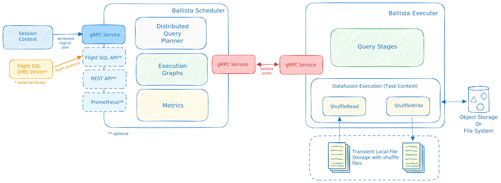

Ballista Architecture¶
Overview¶
Ballista’s primary purpose is to provide a distributed SQL query engine implemented in the Rust programming language and using the Apache Arrow memory model.
Ballista also provides a DataFrame API (both in Rust and Python), suitable for constructing ETL pipelines and analytical queries. The DataFrame API is inspired by Apache Spark and is currently better suited for ETL/SQL work than for data science.
Design Principles¶
Arrow-native¶
Ballista uses the Apache Arrow memory format during query execution, and Apache Arrow IPC format on disk for shuffle files and for exchanging data between executors. Queries can be submitted using the Arrow Flight SQL API and the Arrow Flight SQL JDBC Driver.
Language Agnostic¶
Although most of the implementation code is written in Rust, the scheduler and executor APIs are based on open standards, including protocol buffers, gRPC, Apache Arrow IPC, and Apache Arrow Flight SQL.
This language agnostic approach will allow Ballista to eventually support UDFs in languages other than Rust, including Wasm.
Extensible¶
Many Ballista users have their own distributed query engines that use Ballista as a foundation, rather than using Ballista directly. This allows the scheduler and executor processes to be extended with support for additional data formats, operators, expressions, or custom SQL dialects or other DSLs.
Ballista uses the DataFusion query engine for query execution, but it should be possible to plug in other execution engines.
Deployment Architecture¶
Cluster¶
A Ballista cluster consists of one or more scheduler processes and one or more executor processes. These processes can be run as native binaries and are also available as Docker Images, which can be easily deployed with Docker Compose or Kubernetes.
The following diagram shows the interaction between clients and the scheduler for submitting jobs, and the interaction between the executor(s) and the scheduler for fetching tasks and reporting task status.

Scheduler¶
The scheduler provides the following interfaces:
gRPC service for submitting and managing jobs
Flight SQL API
REST API for monitoring jobs
Jobs are submitted to the scheduler’s gRPC service from a client context, either in the form of a logical query plan or a SQL string. The scheduler then creates an execution graph, which contains a physical plan broken down into stages (pipelines) that can be scheduled independently. This process is explained in detail in the Distributed Query Scheduling section of this guide.
It is possible to have multiple schedulers running with shared state in etcd, so that jobs can continue to run even if a scheduler process fails.
Executor¶
The executor processes connect to a scheduler and poll for tasks to perform. These tasks are physical plans in protocol buffer format. These physical plans are typically executed against multiple partitions of input data. Executors can execute multiple partitions of the same plan in parallel.
Clients¶
There are multiple clients available for submitting jobs to a Ballista cluster:
The Ballista CLI provides a SQL command-line interface.
The Python bindings (PyBallista) provide a session context with support for SQL and DataFrame operations.
The ballista crate provides a native Rust session context with support for SQL and DataFrame operations.
The Flight SQL JDBC driver can be used from popular SQL tools to execute SQL queries against a cluster.
Distributed Query Scheduling¶
Distributed query plans are fundamentally different to in-process query plans because we can’t just build a tree of operators and start executing them. The query now requires co-ordination across executors which means that we now need a scheduler.
At a high level, the concept of a distributed query scheduler is not complex. The scheduler needs to examine the whole query and break it down into stages that can be executed in isolation (usually in parallel across the executors) and then schedule these stages for execution based on the available resources in the cluster. Once each query stage completes then any subsequent dependent query stages can be scheduled. This process repeats until all query stages have been executed.
Producing a Distributed Query Plan¶
Some operators can run in parallel on input partitions and some operators require data to be repartitioned. These changes in partitioning are key to planning a distributed query. Changes in partitioning within a plan are sometimes called pipeline breakers and these changes in partitioning define the boundaries between query stages.
We will now use the following SQL query to see how this process works.
SELECT customer.id, sum(order.amount) as total_amount
FROM customer JOIN order ON customer.id = order.customer_id
GROUP BY customer.id
The physical (non-distributed) plan for this query would look something like this:
Projection: #customer.id, #total_amount
HashAggregate: groupBy=[customer.id], aggr=[MAX(max_fare) AS total_amount]
Join: condition=[customer.id = order.customer_id]
Scan: customer
Scan: order
Assuming that the customer and order tables are not already partitioned on customer id, we will need to schedule execution of the first two query stages to repartition this data. These two query stages can run in parallel.
Query Stage #1: repartition=[customer.id]
Scan: customer
Query Stage #2: repartition=[order.customer_id]
Scan: order
Next, we can schedule the join, which will run in parallel for each partition of the two inputs. The next operator after the join is the aggregate, which is split into two parts; the aggregate that runs in parallel and then the final aggregate that requires a single input partition. We can perform the parallel part of this aggregate in the same query stage as the join because this first aggregate does not care how the data is partitioned. This gives us our third query stage, which can now be scheduled for execution. The output of this query stage remains partitioned by customer id.
Query Stage #3: repartition=[]
HashAggregate: groupBy=[customer.id], aggr=[MAX(max_fare) AS total_amount]
Join: condition=[customer.id = order.customer_id]
Query Stage #1
Query Stage #2
The final query stage performs the aggregate of the aggregates, reading from all of the partitions from the previous stage.
Query Stage #4:
Projection: #customer.id, #total_amount
HashAggregate: groupBy=[customer.id], aggr=[MAX(max_fare) AS total_amount]
QueryStage #3
To recap, here is the full distributed query plan showing the query stages that are introduced when data needs to be repartitioned or exchanged between pipelined operations.
Query Stage #4:
Projection: #customer.id, #total_amount
HashAggregate: groupBy=[customer.id], aggr=[MAX(max_fare) AS total_amount]
Query Stage #3: repartition=[]
HashAggregate: groupBy=[customer.id], aggr=[MAX(max_fare) AS total_amount]
Join: condition=[customer.id = order.customer_id]
Query Stage #1: repartition=[customer.id]
Scan: customer
Query Stage #2: repartition=[order.customer_id]
Scan: order
Shuffle¶
Each stage of the execution graph has the same partitioning scheme for all of the operators in the plan. However, the output of each stage typically needs to be repartitioned before it can be used as the input to the next stage. An example of this is when a query contains multiple joins. Data needs to be partitioned by the join keys before the join can be performed.
Each executor will re-partition the output of the stage it is running so that it can be consumed by the next stage. This mechanism is known as an Exchange or a Shuffle. The logic for this can be found in the ShuffleWriterExec and ShuffleReaderExec operators.